Scope World · Pliego · Entrega 1.5
Ahora, desde dentro.
Las hojas de la Entrega 1 eran preguntas cerradas. Cada una es un libro desplegable de pie sobre su lomo: cerrado se ve igual que antes; abierto, del lomo se levantan sus notas reales. Así el mundo gana interior sin dejar de ser una sola hoja.
pendiente de aprobación · 15 renders nuevos en Blender (Cycles por CPU) con el modelo aprobado sin modificar · interfaz en HTML real · sin cambios en producción · la Entrega 1 queda intacta
Antes y después misma hoja, mismo mapa, misma escala
Entrega 1 · el campo desde fuera

1.5 · el campo desde dentro

Entrega 1 · piezas geométricas (vista previa)

1.5 · MathView activado
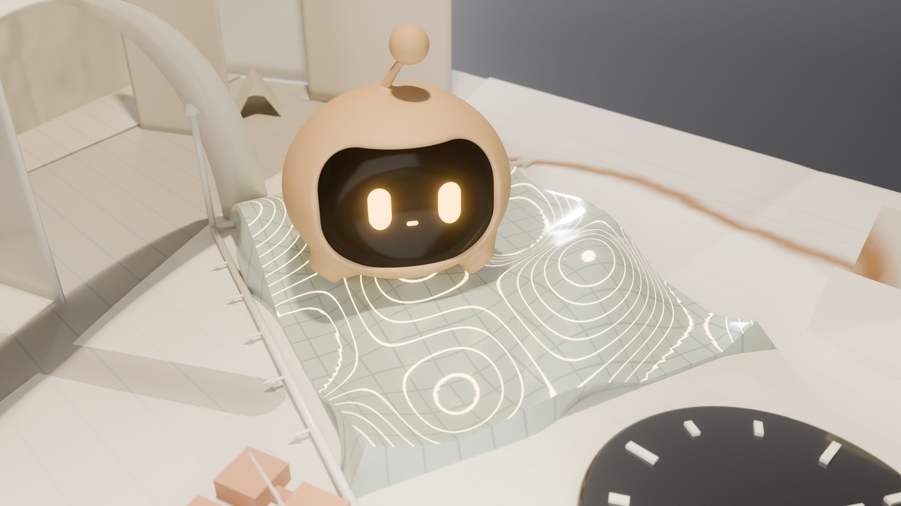
Entrega 1 · home: imagen + interfaz

1.5 · el loader es la home de noche
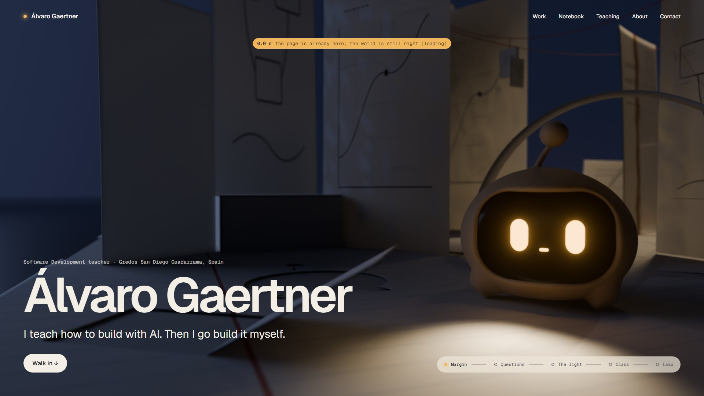
A · El campo de preguntas, explorable 01-evolucion.md
Tres vistas del mismo lugar. Hay libros-pregunta, etiquetas colgadas del hilo rojo con notas reales, «Local Models» tumbada (su estado real es Paused) como banco, y un mirador plegado con escalera en acordeón que da alturas y un sitio desde el que mirar la lámpara.

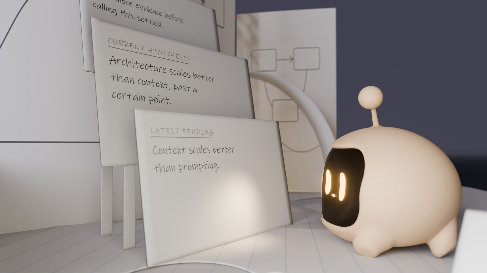
B · Scope abre una pregunta 02-interaccion.md
Sin manos, Scope usa la cara. Motivo: la tapa de «When should one AI agent become two?» se curva con la luz. Acción: mete la cara entre las páginas. Consecuencia: se levantan las capas (hipótesis, suposición fallida tachada, siguiente experimento) y el hilo rojo tira de la pregunta relacionada. Si el visitante la abre antes, Scope solo llega a mirar.
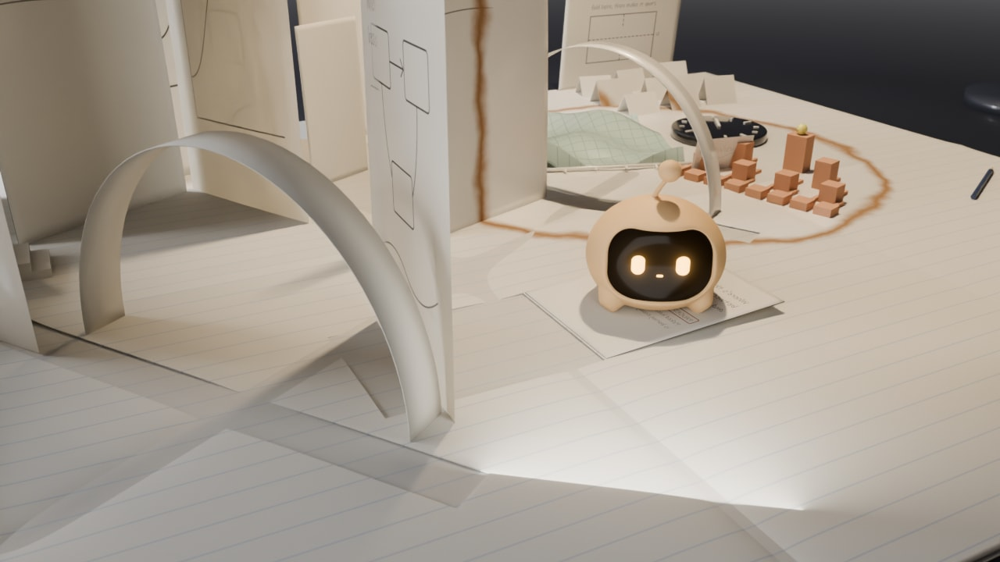
01Descansa
Sobre «Local Models», en pausa como ella.
pose sostenida (rangos aprobados)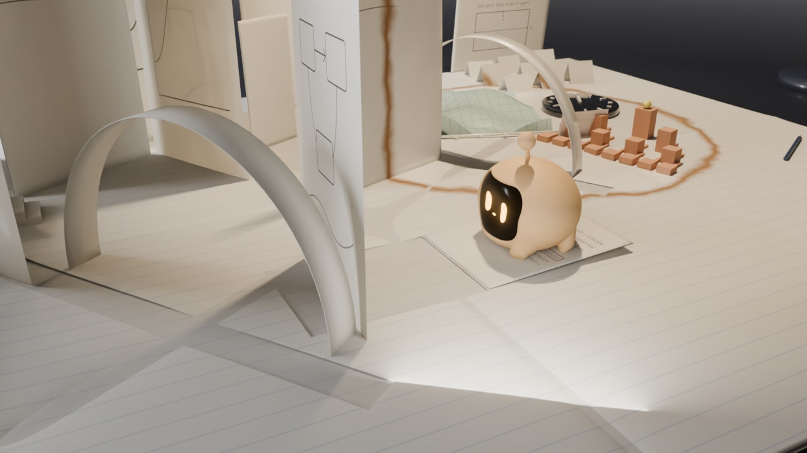
02Algo cambia
La tapa se curva. Scope gira la mirada.
clip Focus.L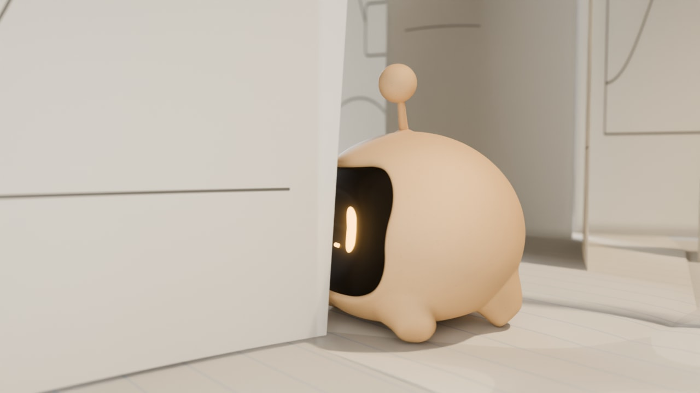
03Se acerca
Junto a la tapa, la antena por delante. Plano de inserto.
clip Focus.R · desplazamiento: clip nuevo
04Empuja
Desde dentro del libro: la cara entre las páginas, que ceden a 45°.
pose experimental · clip nuevo «Nudge»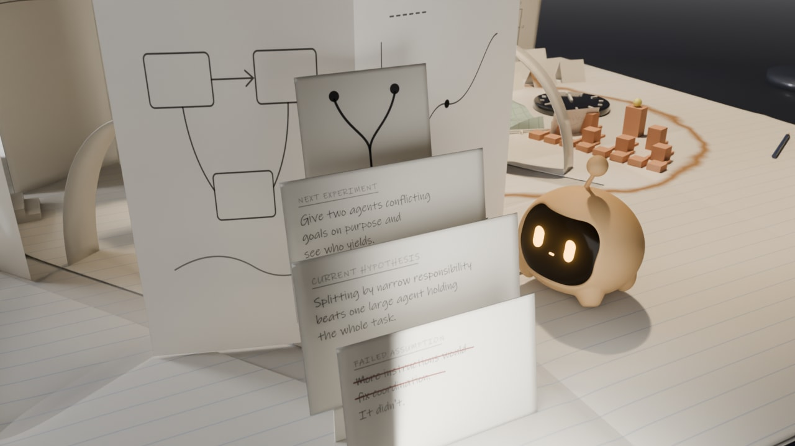
05Se abre
Las capas pop-up de pie, con texto real. Un pequeño salto.
clip Bounce · apertura: animación del objeto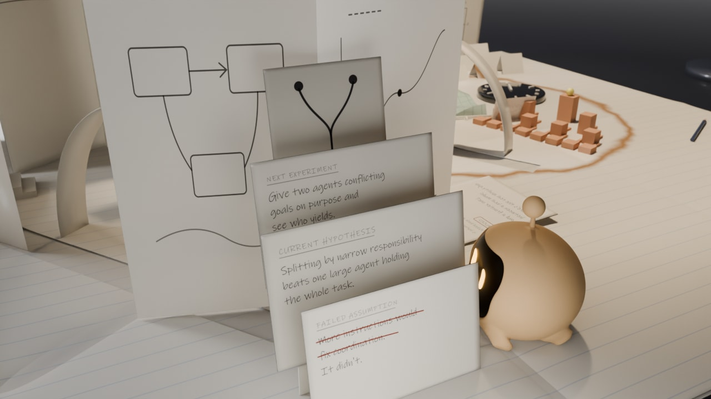
06Lee y sigue
Se asoma a leer y luego mira hacia la pregunta relacionada.
pose sostenidaC · MathView: una gráfica que se pisa 03-proyecto-y-llegada.md
El texto real del proyecto es «a place to actually see the math». En Pliego es una función cocida en porcelana celadón, con ejes y su tarjeta. Al abrirla, la luz de la lámpara enciende sus curvas de nivel y del borde se despliega una hoja del pliego con el contenido real.

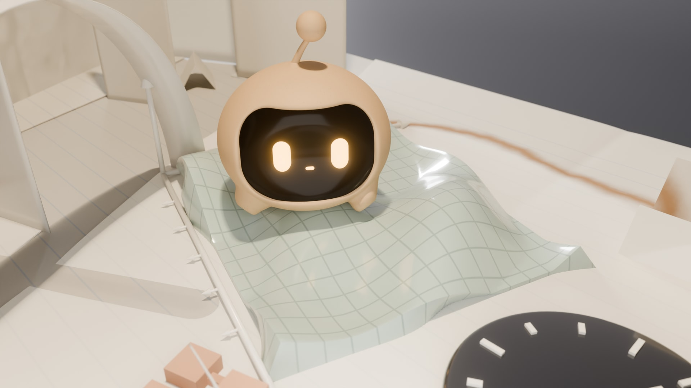
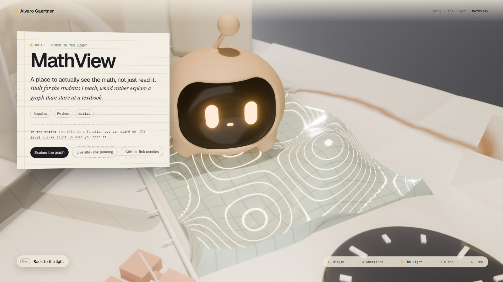
#.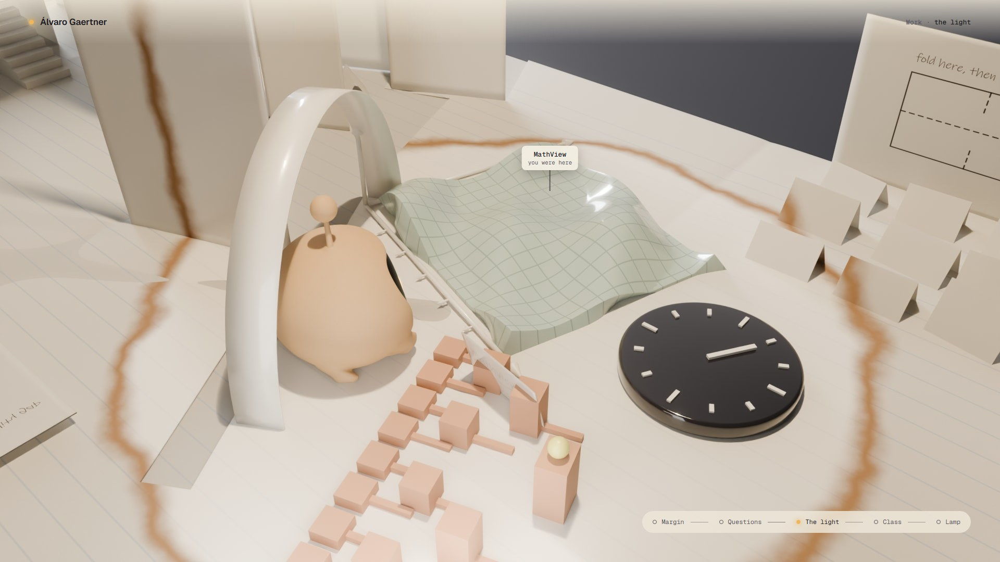
Esc: la hoja se pliega y la cámara sube al círculo. Queda la marca «you were here».D · Los primeros segundos animatic
El loader es la home de noche: la misma cámara y la misma interfaz, disponible desde el primer instante. Cuando la escena está lista se enciende la lámpara y Scope levanta la mirada hacia ti. Luego, lo único que se mueve es la pregunta sin escribir; «Walk in» late una sola vez. Con scroll, la cámara entra por el pliegue largo.
▶ Ver el animatic (bucle con tiempos reales)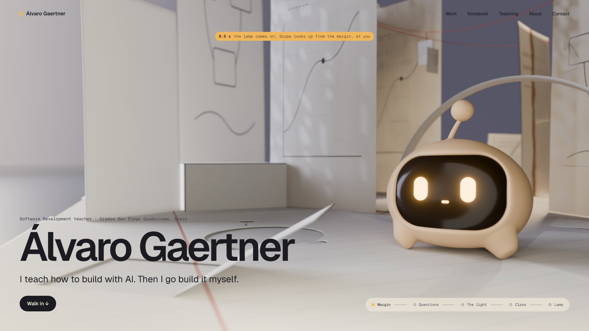
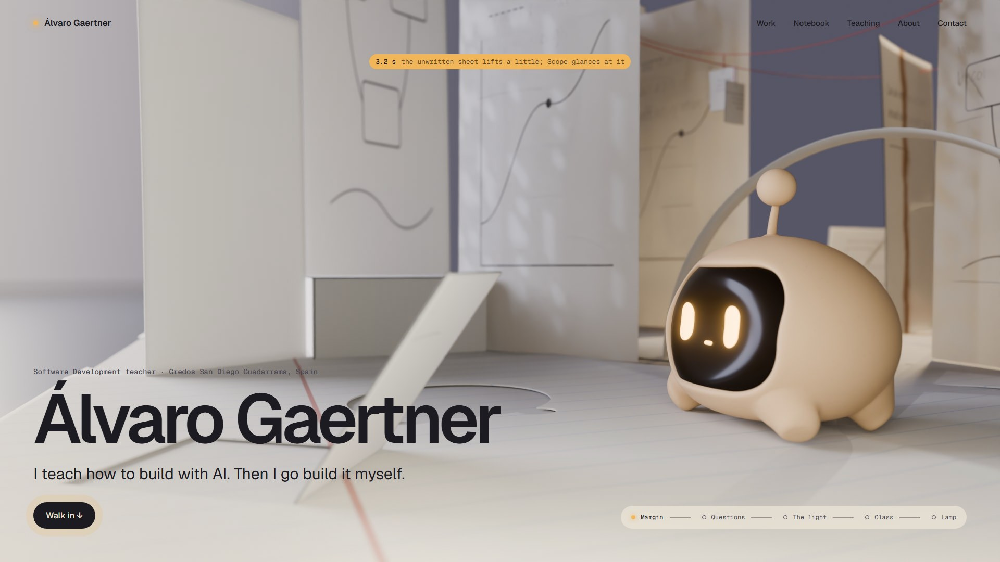
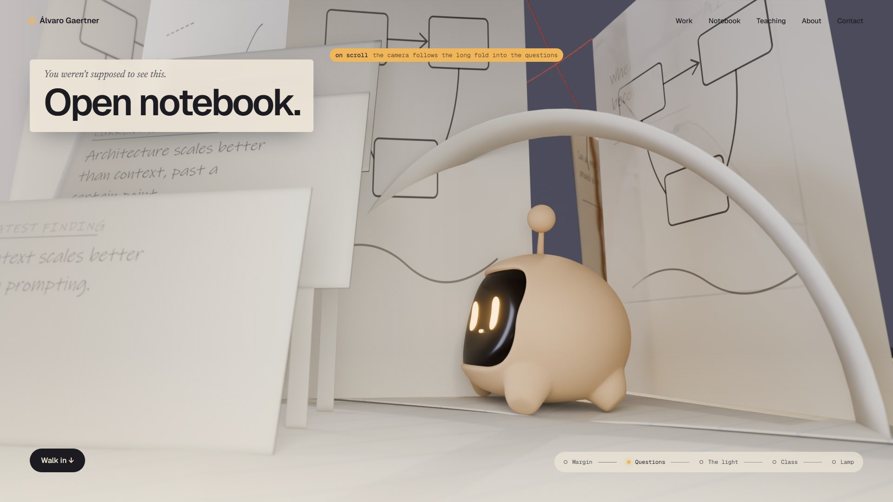
E · Vida autónoma, sin ruido 04-comportamiento.md
Scope pasa la mayor parte del tiempo en pausa. No inicia nada mientras lees. Mira al visitante, pero no lo persigue.
Se inclina sobre las líneas, parpadea y avanza unos centímetros. Solo clips existentes.
De una pregunta a su relacionada, parándose bajo las etiquetas. Necesita locomoción a saltitos (nueva).
El Entregable B. La pregunta queda abierta durante la visita. Necesita el clip «Nudge» y la animación del libro.
F · Viabilidad 05-viabilidad.md · estimaciones, sin medir en GPU
| Elemento | Tiempo real | Cómo |
|---|---|---|
| Pliego, hojas, libros, capas, hilo | Sí | Pocos polígonos; huecos y pliegues cortados en Blender; letra en un atlas KTX2 |
| Ley papel → porcelana y anillo tostado | Sí | Un uniform de centro y radio en el shader |
| Curvas de nivel de MathView | Sí | Calculadas en el shader a partir de la altura |
| Contraluz del papel | Aproximado | Transmisión falsa con un mapa de espesor; sin subsurface |
| Luz y sombras | Horneado + 1 luz | Lightmaps; una sola luz con sombra (lámpara u ojos) |
| Calidad de los renders de Cycles | No | Son el techo visual; sin GPU se sirven como planos prerenderizados |
| Locomoción de Scope | A validar | Saltitos encadenados; requiere un clip y una prueba con GPU |
Límites reales
- Imágenes fijas, no animación. Ninguna interacción está implementada. El animatic encadena fotogramas fijos.
- Poses: clips existentes, poses sostenidas dentro de los rangos ya diseñados y una pose experimental (el empujón: cabeceo de 8°, más que los 5° de Focus). Existe solo en memoria en
blender/mundo.py; el.blendaprobado no se ha modificado ni guardado. - Cámaras: la interacción usa una cámara amplia fija y dos insertos (fotogramas 3 y 4), con los mismos objetos y posiciones. Con una sola cámara, la tapa tapaba a Scope en el momento clave.
- Luces auxiliares: el alcance de la luz de los ojos en la escena nocturna y un rebote suave del papel, como en la Entrega 1.
- Contenido real: notas de
notebook-content.tsy texto deprojects-content.ts. El stack de MathView está marcado como provisional en el propio código y sus enlaces siguen siendo#. - Sin GPU en este equipo: nada se ha probado en tiempo real y las cifras de viabilidad son estimaciones.
- No se ha relanzado
render-all.shde la Entrega 1: los fotogramas 2–9 de su storyboard siguen como vistas previas.